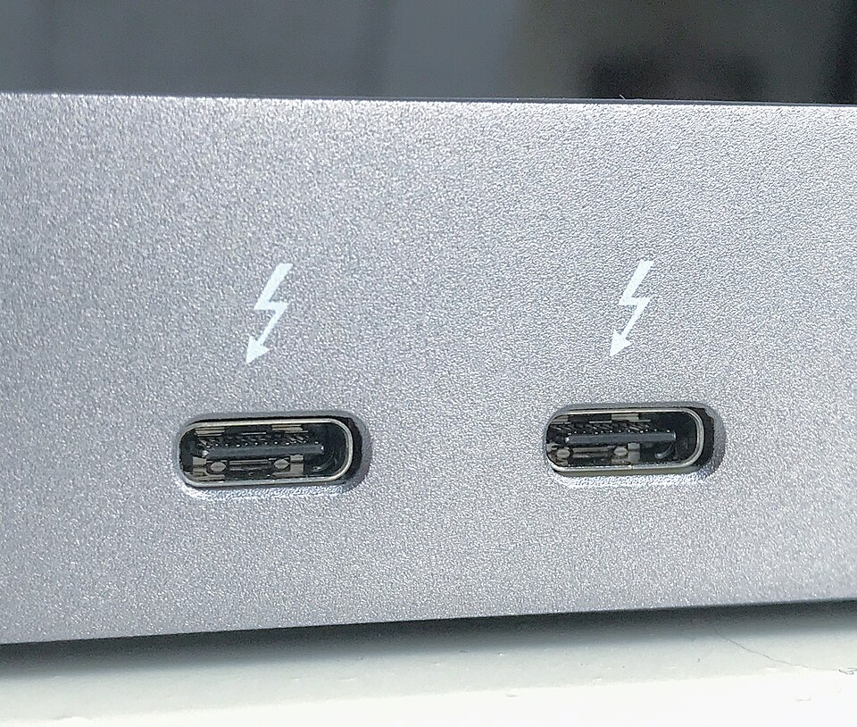

외장 SSD 고를 때, USB4·USB 3.2 차이
외장 SSD를 새로 살 때는 케이블보다 포트 규격부터 봐야 해요. USB4와 USB 3.2는 최대 전송 속도가 달라요. 실제 속도는 PC와 SSD 중 더 느린 쪽에 맞춰져요.
여름 방학·휴가철에는 사진·영상 백업량이 늘어서 속도 차이가 크게 느껴져요. 이 글은 USB-IF 공식 문서를 기준으로 정리했어요. USB4·USB 3.2·Thunderbolt의 속도 차이를 다뤄요. 기준 시점은 2026.08.08이에요.
USB-C 기기가 PC에서 인식이 안 되는 문제는 이 글에서 다루지 않아요. 그 내용은 저희 블로그의 다른 글에서 다뤘어요. 글 제목은 'USB-C 인식 안 될 때, 마이크로소프트 공식 해결 순서'예요.

포트 옆에 번개 모양 아이콘이 있으면 Thunderbolt를 지원한다는 뜻이에요.
참고 · 위키미디어 공용 — Thunderbolt 3 interface USB-C ports(Amin, CC BY-SA 4.0)
USB4는 버전에 따라 최대 속도가 갈려요
USB4는 Version 1.0과 Version 2.0으로 나뉘어요. 최대 속도는 각각 40Gbps와 80Gbps예요.
USB-IF 공식 문서에는 이렇게 적혀 있어요.
"Two-lane operation using existing USB Type-C cables and up to 80 Gbps operation over 80 Gbps certified cables"
기존 40Gbps USB Type-C 패시브 케이블로도 두 레인을 묶어 최대 80Gbps까지 동작해요. 신규로 정의된 80Gbps 액티브 케이블은 선택적으로 쓸 수 있어요.
| 구분 | 최대 속도 | 케이블 조건 |
|---|---|---|
| USB4 Version 1.0 | 40Gbps | 기존 USB Type-C 케이블 |
| USB4 Version 2.0 | 80Gbps | 40Gbps 패시브 케이블도 가능(신규 80Gbps 액티브는 선택) |
USB-IF가 2022년 9월 1일 낸 공식 발표문(PDF, "USB 80Gbps Announcement_FINAL_v2")과 usb.org 공식 USB4 페이지를 기준으로 정리했어요. 케이블 조건은 발표문 원문을 따랐어요.
USB4 Version 2.0은 PAM3라는 새 신호 방식으로 대역폭을 넓혔어요. USB-IF는 이 업데이트가 이전 규격과 그대로 호환된다고 밝혔어요. 호환 대상은 USB4 Version 1.0, USB 3.2, USB 2.0, Thunderbolt 3예요.
USB 3.2는 세 단계 전송률로 나뉘어요
USB 3.2 규격은 세 가지 전송률로 나뉘어요. 20Gbps·10Gbps·5Gbps예요.
최상위 20Gbps 단계의 정식 기술 명칭은 USB 3.2 Gen 2x2예요. 10Gbps 레인 2개를 묶으면 20Gbps가 나와요. USB-IF 공식 문서가 설명하는 방식이에요.
| 전송률 | 방식 |
|---|---|
| 20Gbps | 10Gbps 레인 2개(최상위 단계) |
| 10Gbps | 단일 레인 |
| 5Gbps | 단일 레인(구형) |
USB-IF 공식 USB 3.2 문서(usb.org/usb-32-0) 기준이에요.
삼성전자 포터블 SSD T9는 이 USB 20Gbps 단계를 써요. 삼성전자는 공식 발표에서 이 제품의 속도를 밝혔어요. 순차 읽기 속도는 최대 2,000MB/s, 쓰기 속도는 최대 1,950MB/s예요(1TB·2TB 기준, 4TB는 쓰기도 2,000MB/s예요).
Thunderbolt는 세대마다 속도가 또 달라요
Thunderbolt는 3세대와 4세대가 최대 40Gbps예요. 5세대는 최대 80Gbps로 올라가요.
Thunderbolt 3와 Thunderbolt 4는 대역폭이 같아요. 둘 다 최대 40Gbps예요. 다만 Thunderbolt 4는 최소 보장 성능과 인증 기준이 더 까다로워요.
인텔 뉴스룸은 Thunderbolt 5를 소개하며 이렇게 밝혔어요.
"Thunderbolt 5 will deliver 80 gigabits per second (Gbps) of bi-directional bandwidth, and with Bandwidth Boost it will provide up to 120 Gbps for the best display experience."
평소에는 80Gbps로 동작해요. 고해상도 디스플레이를 연결하면 대역폭 부스트로 최대 120Gbps까지 써요.
| 세대 | 최대 대역폭 |
|---|---|
| Thunderbolt 3 | 40Gbps |
| Thunderbolt 4 | 40Gbps · 최소 보장 기준 강화 |
| Thunderbolt 5 | 80Gbps · 부스트 시 최대 120Gbps |
인텔 뉴스룸 Thunderbolt 5 소개 자료(2023.09.12) 기준이에요. Thunderbolt 3·4가 40Gbps라는 수치는 인텔 발표 자료와 업계 문서에서 공통으로 확인돼요.
그럼 실제 속도는 어떻게 정해지나요?
실제 전송 속도는 PC 포트와 SSD, 케이블 중에서 가장 낮은 규격에 맞춰져요.
USB-IF는 공식 문서에서 이 원리를 설명해요. USB4가 기존 USB 3.2·USB 2.0·Thunderbolt 3 기기와 연결되면, 두 기기 중 더 낮은 성능에 맞춰 동작해요. USB 3.2 공식 문서도 같은 원리를 가장 낮은 공통 속도로 동작한다고 밝혀요.
| PC 포트 | SSD 규격 | 실제 속도 |
|---|---|---|
| USB4 Version 2.0 · 80Gbps | USB4 40Gbps | 40Gbps |
| USB4 40Gbps | USB 20Gbps | 20Gbps |
| USB 20Gbps만 지원 | USB4 40Gbps | 20Gbps |
표는 USB-IF가 밝힌 호환 원리를 조합 예시로 풀어본 거예요. 실제 체감 속도는 제품·케이블·환경에 따라 달라질 수 있어요.
내 PC 포트가 어떤 규격인지부터 확인하세요
포트 규격은 제조사 사양표나 포트 옆 아이콘으로 확인할 수 있어요.
- 노트북·PC 제조사 홈페이지의 사양표에서 포트 항목을 확인해요.
- 포트 옆에 번개 모양 아이콘이 있으면 Thunderbolt를 지원한다는 뜻이에요.
- USB4 표기나 로고가 있으면 USB4 포트예요.
- 케이블도 SSD·포트와 같은 규격을 지원하는지 함께 확인해요.
케이블이 낮은 규격이면 포트와 SSD가 모두 빨라도 속도가 케이블 수준으로 떨어져요.
그래서 뭘 사야 할까요? 용도별로 정리했어요
일반적인 백업·이동용이면 USB 20Gbps 제품으로 충분해요. 대용량 영상 편집이면 USB4 제품이 유리해요.
| 상황 | 추천 규격 | 근거 |
|---|---|---|
| 사진·문서 백업, 이동 위주 | USB 20Gbps | 최대 2,000MB/s급, 일반 용도에 충분해요 |
| 4K·8K 영상 편집, 대용량 전송 | USB4 40Gbps | 순차 읽기 4,000MB/s급 제품이 있어요 |
| PC에 Thunderbolt 5 포트가 있음 | USB4·Thunderbolt 호환 제품 | 최대 80Gbps 대역폭까지 활용할 수 있어요 |
다나와 가격은 2026년 8월 8일에 조회했어요. 가격은 시세에 따라 달라질 수 있어요.
| 제품 | 규격 | 용량 | 가격 |
|---|---|---|---|
| 삼성전자 포터블 SSD T9 | USB 20Gbps · USB 3.2 Gen 2x2 | 1TB | 298,290원 |
| CORSAIR EX400U | USB4 40Gbps | 1TB | 462,980원 |
| CORSAIR EX400U | USB4 40Gbps | 2TB | 690,000원 |
다나와 최저가 기준, 2026.08.08 조회예요.
USB4 SSD를 사도 PC 포트가 USB 3.2까지만 지원하면 속도가 떨어져요. 실제 속도는 USB 3.2 수준이에요. 포트부터 확인하고 사는 게 순서예요.
자주 묻는 질문
Q. 제품에 왜 'USB4 40Gbps'가 아니라 'USB 40Gbps'라고만 쓰여 있나요?
A. USB-IF가 2024년 1월 낸 소비자용 표기 가이드라인에서 그렇게 정했어요. 기술 용어 대신 속도로만 표기하라고 권고했어요. 예를 들면 USB4 Version 1.0은 USB 40Gbps로, USB4 Version 2.0은 USB 80Gbps로 써요.
참고한 곳
· USB-IF 공식 — USB4
· USB-IF 공식 — USB 3.2
· 인텔 뉴스룸 — Thunderbolt 5 소개
하루 정리
· USB4는 Version 1.0이 40Gbps, Version 2.0이 80Gbps로 최대 속도가 갈려요.
· USB 3.2 최상위 단계는 20Gbps, Thunderbolt는 3·4세대가 40Gbps, 5세대가 80Gbps예요.
· 실제 속도는 PC 포트와 SSD 중 더 낮은 규격에 맞춰지니 포트부터 확인하세요.
· 일반 백업용이면 USB 20Gbps로 충분하고, 대용량 편집용이면 USB4가 유리해요.